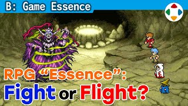
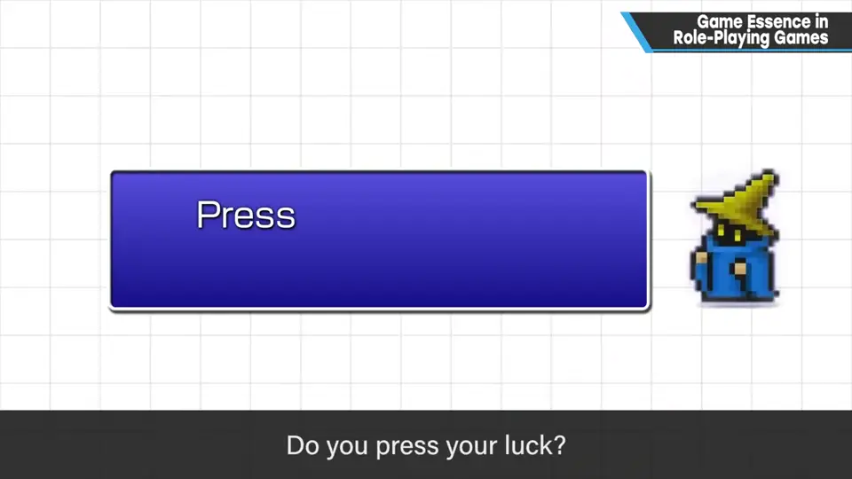
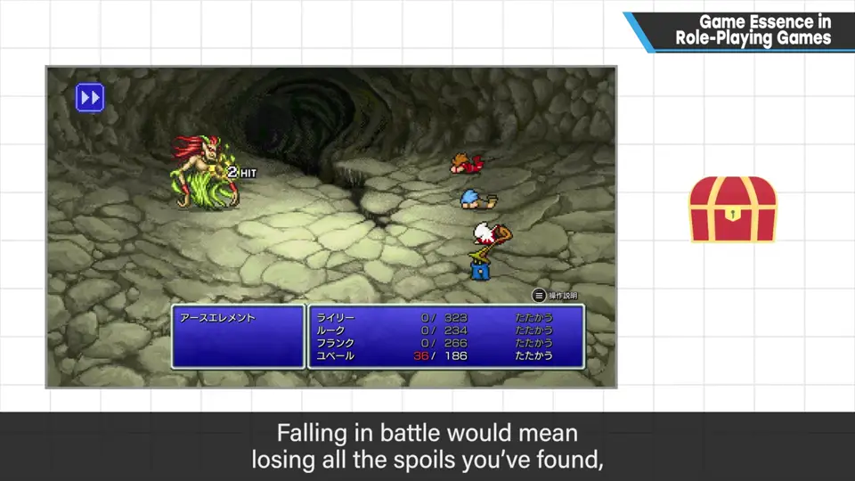
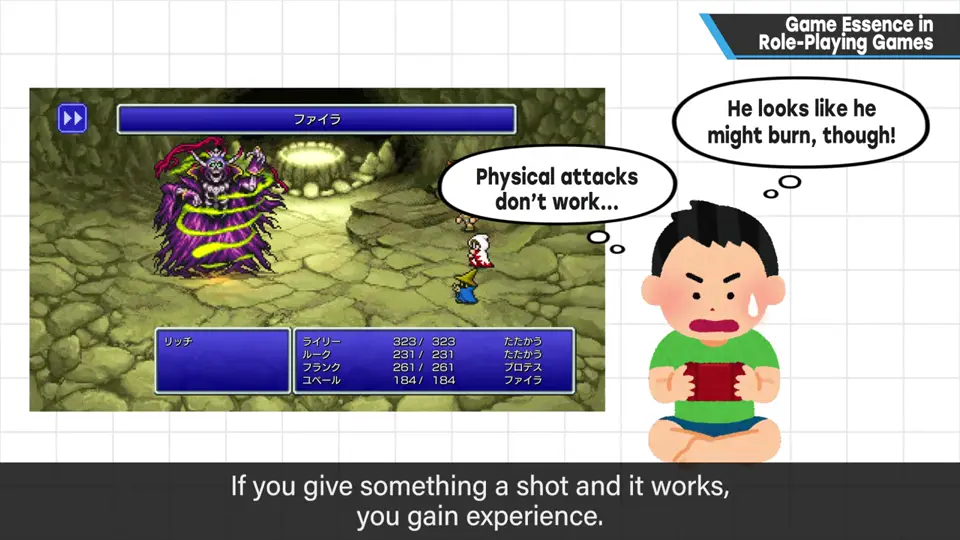
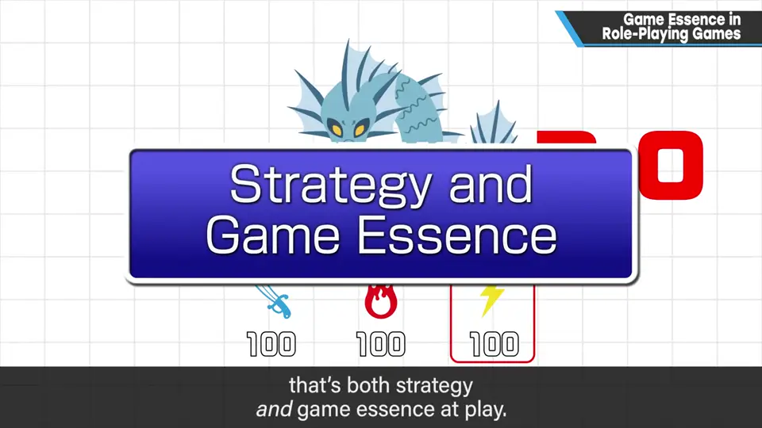
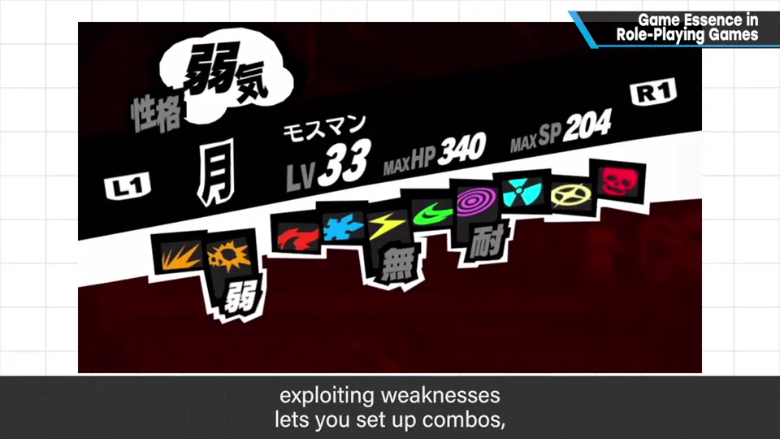
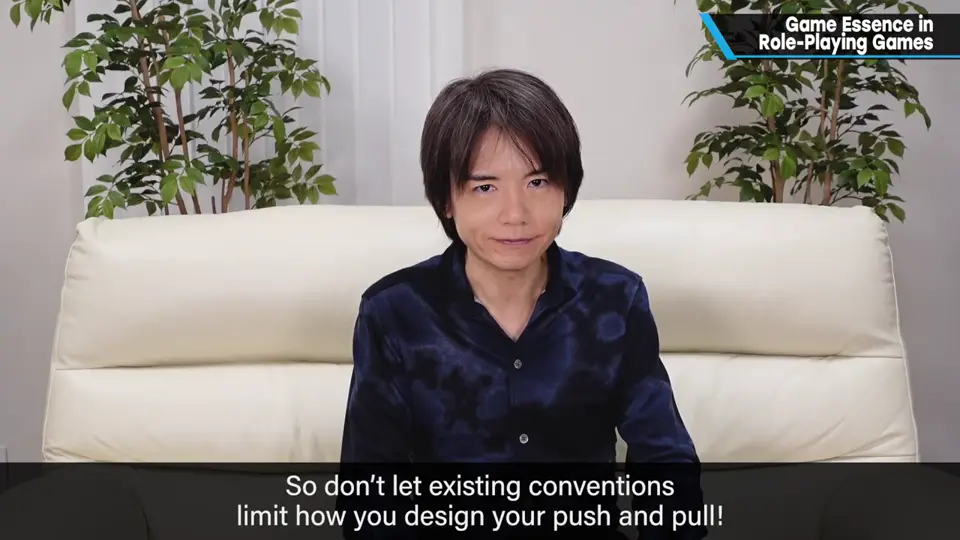

速览
RPG 种类太多，这里扼要讲两个游戏性。探索：踏入未知的危险地带是必要的。越深入敌人越强、越可怕，但可能得到更多回报，所以会忍不住硬撑——「再往前走一点？还是回安全的地方？」倒下就会失去收集到的大量战利品，风险与回报由此成立。随时能回安全地点、不用考虑资源的游戏更偏休闲，但也能靠提高单场战斗的失误率等整体平衡带来紧张感。战斗（这里讲非即时战斗）：敌人出现时，根据外观和性质判断，试着攻击；成功了就变成经验。攻击弱点、用同样的战力打出更好的结果，就是攻略=游戏性。但玩家不一定会想那么多，偏休闲的游戏有时不要做过头；像《女神异闻录》那样攻击弱点就能连续攻击，让系统促使玩家去找弱点，平衡得很好。RPG 范围广而复杂——别拘泥于现有系统，去设计你自己的博弈。
1. 探索：深入，还是回去？ 0:10
RPG 系首先需要踏入危险地带的冒险。
- 越往深处，敌人越强、越可怕；但可能得到更大的回报，于是忍不住硬撑：要不要冒险继续前进？还是回到安全的地方？
- 倒下会失去更多战利品——风险与回报由此成立。


随时能回到安全地点、不用管资源的游戏，相比之下更偏休闲。但这并不代表体验不到紧张刺激的玩法——只要提高单场战斗的失误率等，从整体上取得平衡即可。
2. 战斗：观察、试探、攻击弱点 1:03
动作性的战斗最好结合动作部分来考虑，所以这里讲非即时（回合制）战斗：
- 敌人出现时，先根据外观和性质判断：「这个敌人大概怕某某」。
- 试一下，成功了就变成经验——这是玩家的进步。
- 攻击敌人弱点，用同样的战力打出更好的结果，就是攻略，也就是游戏性。



但玩家不一定会想那么多，偏休闲的作品有时最好别做过头。像《女神异闻录》（Persona）那样攻击弱点就能连续攻击，调整得张弛有度；游戏系统本身在促使玩家攻击弱点，平衡做得很好。
3. 别拘泥于现有系统 2:06
这里只举了 RPG 的移动（探索）和战斗两个部分作为游戏性的例子，但 RPG 的范畴其实更广、更复杂。

自测题
1. RPG 探索中的风险与回报体现在哪里？
越深入敌人越强越可怕，但回报可能越大，于是会犹豫是否继续还是回安全的地方；倒下会失去更多战利品。 0:18
2. 可以随时回到安全地点的 RPG 就无法有紧张感吗？
不是。它更偏休闲，但只要提高单场战斗的失误率等，从整体上平衡，也能带来紧张刺激的体验。 0:50
3. 回合制战斗中的「攻略」是什么？樱井举了哪个系统例子？
根据外观判断、试探敌人，攻击弱点，用同样的战力打出更好的结果。例：《女神异闻录》攻击弱点能连续攻击，系统促使玩家去找弱点。 1:30